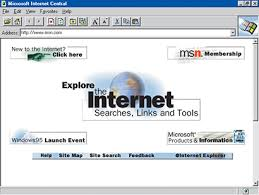

-
1969
-
1974
-
1986
-
1989
-
1990
Criação do primeiro browserPrimeira versão do HTMLCriação do primeiro browser
Tim Berners-Lee desenvolve o primeiro browser, chamado WorldWideWeb
Fonte: W3C
X -
1992
Publicada a primeira foto na WebPublicada a primeira foto na Web
 Tim-Berners Lee posta a primeira foto da Web, uma foto da banda “Les Horribles Cernettes”
Tim-Berners Lee posta a primeira foto da Web, uma foto da banda “Les Horribles Cernettes”Fonte: The Telegraph
XCriação da ISOCCriação da ISOC
A Internet Society (ISOC) foi formada em 1992 para promover normas técnicas e outras especificações para a utilização da Internet.
Fonte: Internet Society
X -
1993
CERN disponibiliza a Web ao mundoLançamento do navegador MosaicCERN disponibiliza a Web ao mundo
O CERN disponibiliza como domínio público e "doa para o mundo" a tecnologia da Web.
Fonte: Pew Internet Research
X -
1994
Tim Berners-Lee cria o W3CLançamento do NetscapeTim Berners-Lee cria o W3C
Tim Berners-Lee cria o W3C (World Wide Web Consortium), no MIT (Massachusetts Institute of Technology), em colaboração com o CERN.
Fonte: W3C
XEspecificação do URLNetscape lança a primeira versão do seu navegador
Lançado um dos primeiros browsers "user friendly" que rapidamente é adotado pelo mercado.
Fonte: BBC
X -
1995
HTML 2 é uma recomendaçãoCriação do EbayHTML 2 é uma recomendação
HTML 2 torna-se um padrão pelo IETF, de modo a criar uma especificação para interoperabilidade entre as versões do HTML.
Fonte: W3C
XLançamento do Internet ExplorerCriação do Ebay
Originalmente chamado “AuctionWeb”, listou o primeiro item para venda: um laser pointer quebrado.
Fonte: Ebay
XBrendan Eich cria o JavaScriptLançamento do Internet Explorer
Lançado o primeiro navegador Web da Microsoft. O Internet Explorer 1 foi lançado em 1995 junto com o Windows 95.
Fonte: StateTec
XCriação do CGI.brPrimeiro domínio .com.brCriação do CGI.br
No dia 31 de maio de 1995, a Portaria Interministerial nº 147 cria o Comitê Gestor da Internet no Brasil (CGI.br).
XFonte: CGI.br
-
1996
CSS1 é uma recomendação W3CLançamento do HotmailCSS1 torna-se uma recomendação W3C
Devido a necessidade de criar estilos de visualização para documentos, foi criada a Folha de Estilos em Cascata (CSS) 1.0.
Fonte: W3C
XLançamento do UOL Recomendação XML 1.0Lançamento do Hotmail
Hotmail lança um dos primeiros serviços de Webmail gratuito do mundo.
Fonte: Microsoft
XPublicada a RFC HTTP1Lançamento o Flash 1Publicada a RFC HTTP1
Publicada a RFC da versão 1.0 do Protocolo de Transmissão para Linguagem de Marcação, o HTTP 1.0
Fonte: IETF
X -
1997
HTML3.2 é uma recomendaçãoHTML4 é uma recomendação W3CHTML3.2 é uma recomendação do W3C
 A nova versão da linguagem de marcação para hipertexto introduz atributos para formatação visual, como o uso de cores de fundo.
A nova versão da linguagem de marcação para hipertexto introduz atributos para formatação visual, como o uso de cores de fundo.Fonte: W3C
XDomínio Google.com é registradoImposto de Renda pela InternetGoogle.com é registrado como um domínio
O domínio foi registrado em 15 de setembro. O nome é uma brincadeira com a palavra "googol", um termo matemático para o número representado pelo numeral 1 seguido por 100 zeros.
Fonte: Google
XReceita Federal libera a entrega de IR pela Internet
Com o intuito de facilitar as entregas das declarações de imposto de renda, foi criado um programa específico para transmissão de declarações pela internet, o Receitanet.
Fonte: Receita federal
X -
1998
Criação da ICANNPublicada a RFC do IPV6Criação da ICANN
Em outubro de 1998, O Departamento de Comércio dos Estados Unidos ("DoC") e a Network Solutions, Inc. ("NSI") firmam um acordo de cooperação e criam a "Internet Corporation for Assigned Names and Numbers".
Fonte: ICANN
X -
1999
Lançamento do NapsterInício da pesquisa sobre IoTLançamento do Napster
Em junho de 1999, o serviço de compartilhamento de músicas chamado Napster foi lançado.
Fonte: The Economist
X -
2001
Primeiro artigo sobre Web SemânticaRecomendação XHTML1 Lançamento da WikipediaPrimeiro artigo sobre Web Semântica
Tim Berners-Lee, Ames Hendler e Ora Lassila escreveram o primeiro artigo sobre Web Semântica, em inglês The Semantic Web: A new form of Web content that is meaningful to computers will unleash a revolution of new possibilities.
Fonte: Scientific American
XInternet Explorer 6Lançamento da Wikipedia
Lançamento da maior enciclopédia online da internet, a Wikipedia, que foi construída de forma colaborativa pelos usuários.
Fonte: DW.com
XMicrosoft lança o Internet Explorer 6
No dia 27 de agosto de 2001 a Microsoft lança a versão 6 do seu navegador.
Fonte: Statetech Magazine
XWSISWSIS
Aprovação nas Nações Unidas para criar a WSIS (Cúpula Mundial sobre a Sociedade da Informação / World Summit on the Information Society), em duas partes.
Fonte: Virtual Policy
X -
2002
HTML Design PrinciplesLançamento do navegador FirefoxHTML Design Principles
W3C publica o primeiro documento a abordar conceitos do HTML5, chamado “HTML Design Principles”
Fonte: W3C
X -
2003
-
2004
Publicada a recomendação RDFPublicada a recomendação OWLPublicada a recomendação RDF
A documentação publicada pelo W3C apresenta o RDF, um modelo padrão para o intercâmbio de dados na Web.
Fonte: W3C
XCriado o WHATWGPublicada a recomendação OWL
OWL, em inglês Web Ontology Language é criada para facilitar a interoperabilidade das máquinas e dar suporte ao XML, RDF e DRF Schema (RDF-S).
Fonte: W3C
XLançamento do OrkutCriado o WHATWG
Fundado em 2004 por representantes da Apple, Mozilla Foundation e Opera, o grupo é uma comunidade interessada na evolução da Web.
Fonte: WHATWG
XLançamento do FacebookLançamento do Orkut
Criada por um funcionário do Google, Orkut Büyükkökten, a rede social foi amplamente utilizada por brasileiros.
Fonte: Search Engine Watch
XLançamento do Facebook
 Criada por Mark Zuckemberg, a rede social nasceu em fevereiro de 2004 dentro da universidade de Harvard e se tornou a maior rede social do planeta.
Criada por Mark Zuckemberg, a rede social nasceu em fevereiro de 2004 dentro da universidade de Harvard e se tornou a maior rede social do planeta.Fonte: Business Insider
X -
2005
Lançamento do YouTubePadronização do URILançamento do YouTube
Lançamento do serviço de publicação de vídeos online, Youtube, que seria comprado pelo Google anos depois.
Fonte: Forbes
XCriação do NIC.brPesquisas TICCriação do NIC.br
O NIC.br passou a ser a instituição que administra as ações de registro de nomes sob o .br além de assumir outras atribuições.
Fonte: NIC.br
XCriação do IGF na WSISCetic.br lança Pesquisas TIC Domicílios e Empresas
Apresentados os primeiros indicadores das Pesquisas TIC Domicílios e TIC Empresas.
Fonte: CGI.br
XCriação do IGF na WSIS
Agenda de Tunis: criação do IGF na WSIS Cúpula Mundial sobre a Sociedade da Informação.
Fonte: WGIG REPORT
X -
2006
Lançamento do TwitterLançamento do Twitter
Lançada a rede social Twitter, criada para enviar mensagens de apenas 140 caracteres, chamadas de tweets.
Fonte: Daily Finance
X -
2007
Criação do W3C BrasilLançamento do Google Street ViewCriação do escritório do W3C Brasil
Por determinação do Comitê Gestor da Internet no Brasil, o primeiro escritório do W3C na América Latina é inaugurado em São Paulo.
Fonte: CGI.br
X -
2008
Primeira versão do HTML5Publicado o documento WCAG2.0Primeira versão da documentação sobre HTML5
Lançada a primeira edição do documento com os novos elementos do HTML5.
Fonte: W3C
XPublicada a recomendação SPARQLPublicado o documento WCAG2.0
A iniciativa de Acessibilidade na Web do W3C publica a segunda versão das Diretrizes de Acessibilidade para Conteúdo Web, que ampliam a abordagem da acessibilidade da versão 1.0.
Fonte: W3C
XMobile Web Best Practices 1.0Publicada a recomendação SPARQL
O documento define a especificação de sintaxe da linguagem SPARQL para RDF.
Fonte: W3C
XLançamento do Google ChromeW3C publica a recomendação Mobile Web Best Practices 1.0
Publicado o primeiro documento sobre boas práticas no desenvolvimento Web para dispositivos móveis.
Fonte: W3C
XLançamento do DropboxLançamento do Dropbox
 O serviço de armazenamento de arquivos em núvem Dropbox é lançado
O serviço de armazenamento de arquivos em núvem Dropbox é lançadoFonte: Channel Web
X -
2009
Fim do grupo de XHTML2Conferência Web W3C BrasilW3C encerra o Grupo de Trabalho de XHTML2
Com o objetivo de concentrar esforços no HTML5, o W3C decide encerrar as atividades do grupo que trabalhava com o XHTML.
Fonte: W3C
XLançamento do buscador BingPrimeira edição da Conferência Web W3C Brasil
Em 2009 foi realizada a primeira conferência W3C Brasil, em São Paulo, com o objetivo de discutir o futuro da Web no país.
Fonte: W3C Brasil
XElemento VIDEO do HTML5Microsoft lança o sistema de busca Bing
Microsoft lança seu próprio sistema de busca, chamado Bing.
Fonte: Business Korea
XFirefox e Chrome dão suporte ao elemento <video>
Os navegadores Google Chrome e Mozilla Firefox começam a suportar o novo elemento do HTML 5 para a reprodução de vídeos.
Fonte: Mozilla e CNET France
X -
2010
Lançamento do InstagramLançamento do Instagram
Lançado o aplicativo para compartilhamento de fotos, que mais tarde seria comprado pelo Facebook.
Fonte: Business to Community
XPrimeiro Fórum da InternetPrimeiro Fórum da Internet
O CGI.br promove o Fórum da Internet no Brasil com o objetivo de reunir participantes dos diversos setores e todos os interessados e envolvidos nos debates e temas a respeito da Internet no Brasil e no mundo.
Fonte: Fórum da Internet
X -
2011
Lançamento do Todos@WebInterest Group Web and TVLançamento da primeira edição do Prêmio Todos@Web
A primeira edição do Prêmio Nacional de Acessibilidade na Web foi lançada com o objetivo de fomentar e estimular iniciativas acessíveis na Web brasileira.
Fonte: Ceweb.br
XSeletores CSS3W3C lança o Interest Group Web and TV
Lançado em fevereiro de 2011, o "Interest Group Web and TV" proporciona um fórum técnico para discussões para Web e TV.
Fonte: W3C
XLançamento do Google+W3C publica recomendações de seletores do CSS3
O documento de Seletores CSS3 apresenta novos seletores e linguagens.
Fonte: W3C
XLançamento do Google+
Lançada a rede social desenvolvida pelo Google, com o objetivo de competir com o Facebook.
Fonte: Social Barrel
X -
2013
-
2014
HTML5 é uma recomendação W3CRecomendações RDFHTML5 é uma recomendação W3C
Durante a celebração dos 25 anos da Web e dos 20 anos do W3C, a documentação do HTML5 é anunciada como uma Recomendação do W3C.
Fonte: W3C
XDWBP e CSVWGRecomendações RDF
W3C publica a recomendação RDF 1.1. Turtle e RDF Data Cube Vocabulary
Fonte: W3C
XPrimeira edição da EGINetmundialPrimeira edição da EGI
Primeira edição do Curso de Curta Duração da Escola de Governança da Internet no Brasil com o objetivo de fomentar e incentivar no Brasil a capacitação, pesquisa e estudos sobre a Governança da Internet.
Fonte: EGI.br
XPrimeiro gTLD personalizado no BrasilNetmundial
A reunião Netmundial ocorreu em São Paulo com o foco de elaborar princípios para a governança da Internet e apresentar propostas para o desenvolvimento do ecossistema da Internet.
Fonte: Netmundial
XPrimeiro gTLD personalizado no Brasil
O primeiro domínio de internet personalizado concedido ao Brasil foi para as Organizações Globo. Os órgãos da companhia poderão usar o sufixo .GLOBO em seus sites.
Fonte: Olhar Digital
X -
2015
Criação do Ceweb.brLançamento do Web Payments WGCriação do Ceweb.br
 Criado o Centro de Estudos sobre Tecnologias Web (Ceweb.br) para disseminar e promover o uso de tecnologias abertas na Web, fomentar e impulsionar a sua evolução no Brasil.
Criado o Centro de Estudos sobre Tecnologias Web (Ceweb.br) para disseminar e promover o uso de tecnologias abertas na Web, fomentar e impulsionar a sua evolução no Brasil.Fonte: NIC.br
X -
2016
-
.
 O HTML4 trouxe grandes melhorias para formulários, tabelas e para documentos em múltiplos idiomas.
O HTML4 trouxe grandes melhorias para formulários, tabelas e para documentos em múltiplos idiomas.